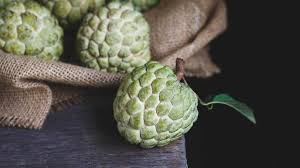
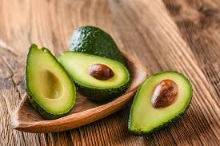

Chirimoya (Custard Apple)
English: Chirimoya, also known as custard apple, is a creamy and sweet fruit with a flavor that resembles a mix of banana, pineapple, and strawberry. It’s green and heart-shaped with a soft, edible flesh.
Español: La chirimoya, también conocida como fruta de la crema, es una fruta cremosa y dulce con un sabor que recuerda a una mezcla de plátano, piña y fresa. Es verde y en forma de corazón, con una pulpa suave y comestible.
Granada (Pomegranate)
English: The pomegranate is a round fruit filled with juicy, jewel-like seeds.has a slightly tart flavor and is rich in antioxidants. Its a popular fruit in Mediterranean regions.
Español: La granada es una fruta redonda llena de semillas jugosas y parecidas a joyas. Tiene un sabor ligeramente ácido y es rica en antioxidantes. Es una fruta popular en las regiones mediterráneas.
Uva (Grape)
English: Grapes are small, round fruits that can be sweet or tart. They are enjoyed fresh, dried as raisins, or used in winemaking. Spain is famous for its grape varieties and vineyards.
Español: Las uvas son frutas pequeñas y redondas que pueden ser dulces o ácidas. Se disfrutan frescas, secas como pasas o se utilizan para hacer vino. España es famosa por sus variedades de uva y viñedos.

Melón (Melon)
English: Melon is a sweet, juicy fruit with a green or orange flesh. Spain produces different varieties, including melón piel de sapo, known for its green rind and refreshing taste.
Español: El melón es una fruta dulce y jugosa con pulpa verde o naranja. España produce diferentes variedades, incluyendo el melón piel de sapo, conocido por su cáscara verde y sabor refrescante.

Aguacate (Avocado)
English: Avocado is a creamy fruit rich in healthy fats. It has a smooth, buttery texture and is commonly used in salads, toasts, or as a spread.
Español: El aguacate es una fruta cremosa rica en grasas saludables. Tiene una textura suave y mantecosa y se usa comúnmente en ensaladas, tostadas o como untable.